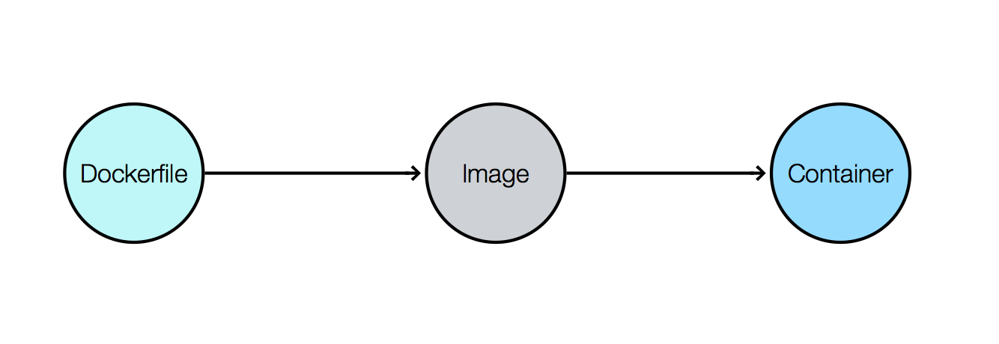
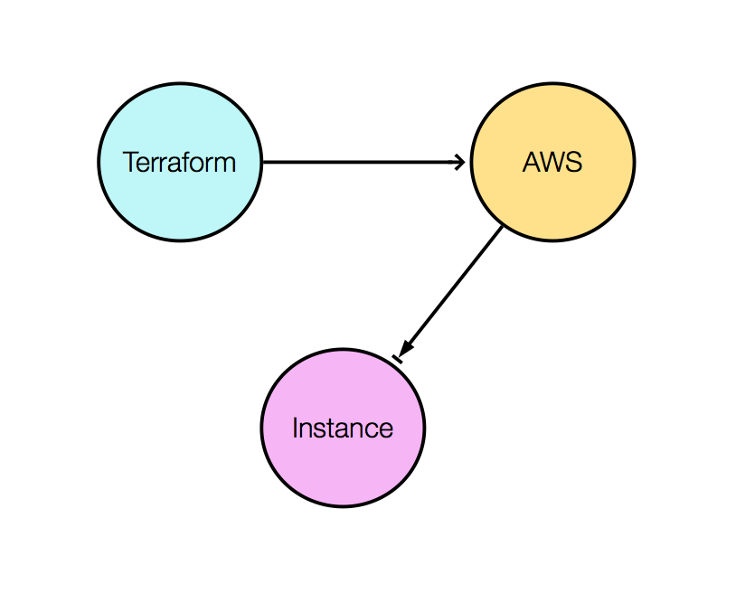
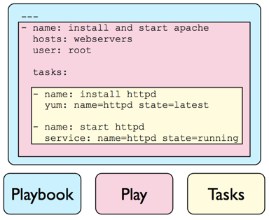
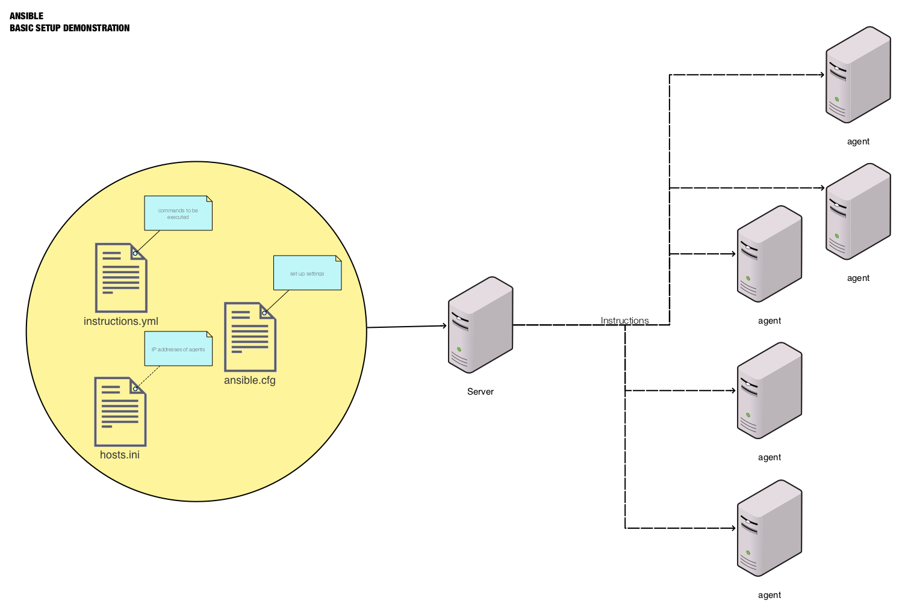

The following notes
Docker
Docker is a computer program that performs operating-system-level virtualization also known as containerization.
Basic Docker commands
The following commands provide us with the basic tools to start and manage docker containers. Start a new Ubuntu container:
docker run -it ubuntu /bin/bash
List all containers:
Start-up an existing container that is not running:
docker start f8fb13dcbf2f
Start a bash shell of an existing container that is running:
docker exec -it f8fb13dcbf2f /bin/bash
Dockerfile
Dockerfiles use a simple DSL which allows you to automate the steps you would normally manually take to create an image.
The following Docerfile example would would create a docker image. The image will contain the instructions to start a container with the latest Ubuntu version. The instructions in the Dockerfile also state that the container will install vim, git, apache, mysql-client, and python.
FROM ubuntu:latest
RUN apt-get update -y
RUN apt-get install vim -y
RUN apt-get install git -y
RUN apt-get install apache2 -y
RUN apt-get install mysql-client -y
RUN apt-get install python -y
Once we have specified the Dockerfile, running the following command would create an image (Similar to an .iso) that we could use to initialize containers.
docker build -it container-name
We can take a look at our images by typing the following command:
Once we confirm that we have created the image, we could start our container with the specified image by typing:
docker run -it container-name /bin/bash

Terraform
Terraform is an infrastructure as code software by HashiCorp. It allows users to define a datacenter infrastructure in a high-level configuration language, from which it can create an execution plan to build the infrastructure such as Amazon Web Services.
- Open source
- Automation tool
- Infrastructure as code
- Set any form of AWS service
- Can be used with multiple cloud providers
- Provides a boot print
Infrastructure as code
Terraform gives us the flexibility to construct and specify the instance or machine that we wish to build.
The following terraform file provides a brief example of infrastructure as code.
In the following example we have specified that our instance is to be located in the us-east-2 region.
We have also stated that we wish to have a security group with SSH capalities which will provide us with SSH capabilities.
It is important to understand that your ami and key_name should pertain to the region specified.
The following example is a terraform file with the .tf extension.
provider "aws" {
region = "us-east-2"
}
resource "aws_instance" "web" {
ami = "ami-922914f7"
instance_type = "t2.micro"
key_name = "tmpkey"
vpc_security_group_ids = ["${aws_security_group.ssh.id}"]
associate_public_ip_address = "true"
tags {
Name = "project1"
}
}
resource "aws_security_group" "ssh" {
description = "Allows SSH from the world"
ingress {
from_port = 22
to_port = 22
protocol = "tcp"
cidr_blocks = ["0.0.0.0/0"]
}
egress {
from_port = 0
to_port = 0
protocol = "-1"
cidr_blocks = ["0.0.0.0/0"]
}
tags {
Name = "example-security-group"
}
}
Setting keys with Terraform
In order to avoid using our keys in a terraform file, it is important to locally install
AWS Command Line Interface locally on your computer.
Once installed on your local machine, running the awscli configure will prompt you to enter the proper credentials.
Basic Terraform Commands
The following commands provide the basic functionality of terraform.To initialize terraform, it is important to be located in the directory where the terraform file is located. Once you are in the proper place, type the following command:
To check your terraform file for any error and to inspect the execution plan, use the following command:
Once you believe it is time to to execute your plan, type:
To delete and stop and sort of service on Amazon Web Services that were launched and initialized by terraform, simply type:
The following diagram demonstrates how terraform is used to created custom instances using Amazon Web Services

Ansible
Ansible is an open source software that automates software provisioning, configuration management, and application deployment. Ansible connects via SSH, remote PowerShell or via other remote APIs.
For a simple ansible connection, we will require three files.
- Hosts/inventory file
- Configuration file
- Instructions file
Hosts/inventory file
The hosts/inventory file contains the IP addresses of the hosts that we will connecting to. These are also known as the agents that will follow and conduct the commands.
The file should be contain the hosts.ini file name and the .ini extension.
Configuration file
Certain settings in Ansible are adjustable via a configuration file (
ansible.cfg).
The configuration file allows us to set values that will be used to when making a connection to the agents.
the following example contains the basic values that are needed in a ansible.cfg file.
[defaults]
remote_user = ec2-user
private_key_file = ~/tmpkey.pem.txt
hostfile = hosts.ini
Instructions file
The instructions that are to be executed are written in a YAMAL file that end with the .yml extension.
YAMAL instructions are not universal; they have to be written to fit a particular operation system.
The following git.yml has been written for a linux distribution that is not ubuntu. The git.yml contains a set of instructions that will install git on the agent.
---
- hosts: server
tasks:
- name: Install git
become: true
yum: name=git state=present
- name: Install apache
become: true
yum: name=httpd state=present
- name: Install mysql-client
become: true
yum: name=mysql state=present
- name: Install php
become: true
yum: name=php state=present
- name: Copy pathfinder.conf file
become: true
copy:
src: ~/immersive/jorge_ruiz/ansible/project1/pathfinder.conf
dest: /var/log
Notice that ansible instruction files are very sensisitve to formatting inconsistencies. However, for our example, we consistenly used double space.
Ansible instruction files are also known as playbooks that contain plays and tasks.

The following diagrams demonstrates a visual representation of how ansible interacts with agents.
